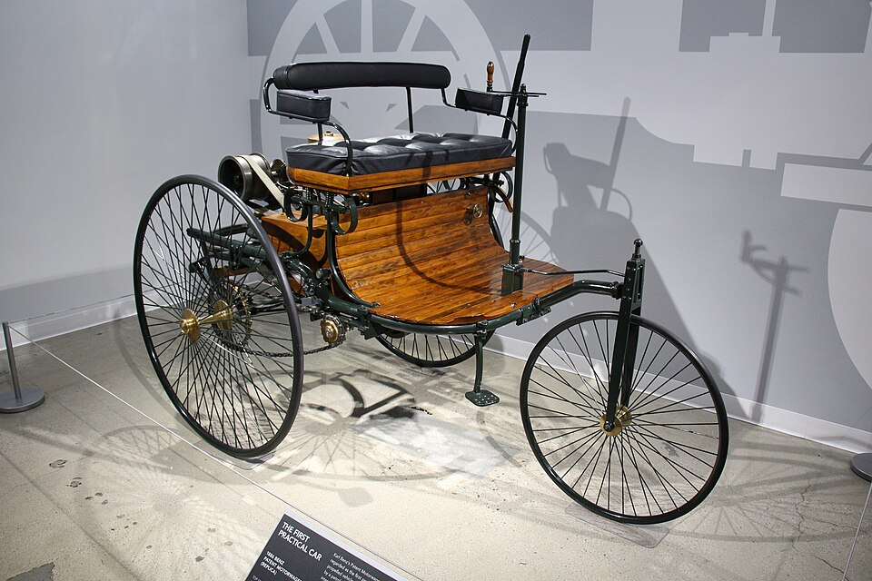

Ferrari F40
Criada para celebrar os 40 anos da Ferrari, a F40 nasceu em 1987 com visual de corrida, carroceria leve e um V8 biturbo. Foi o último modelo apresentado durante a vida de Enzo Ferrari.
BEM-VINDO AO CARHOUSE
Em 1886, Karl Benz patenteou o Benz Patent-Motorwagen, um dos primeiros automóveis modernos a gasolina. Décadas depois, surgiriam máquinas que se tornaram verdadeiras lendas.
No CarHouse, vamos conhecer os carros que fizeram história pelo desempenho, pela engenharia e pelo design — de clássicos como a Ferrari F40 até o Ford GT.

Cinco fotografias reais de alguns dos automóveis mais marcantes de todos os tempos.
Ícone italiano de desempenho e design

Homenagem moderna ao lendário GT40

Superesportivo famoso pelo assento central

Tecnologia avançada e tração integral

Silhueta em cunha e portas tesoura
O que fez cada um desses modelos entrar para a história?
| Modelo | Lançamento | Motor | Destaque |
|---|---|---|---|
| Ferrari F40 | 1987 | V8 biturbo | Ícone italiano de desempenho e design |
| Ford GT | 2005 | V8 supercharged | Homenagem moderna ao lendário GT40 |
| McLaren F1 | 1992 | V12 aspirado | Superesportivo famoso pelo assento central |
| Porsche 959 | 1986 | 6 cilindros biturbo | Tecnologia avançada e tração integral |
| Lamborghini Countach | 1974 | V12 aspirado | Silhueta em cunha e portas tesoura |
Três superesportivos lendários e o que torna cada um especial.
Criada para celebrar os 40 anos da Ferrari, a F40 nasceu em 1987 com visual de corrida, carroceria leve e um V8 biturbo. Foi o último modelo apresentado durante a vida de Enzo Ferrari.
Em 1966, o Ford GT40 derrotou a Ferrari nas 24 Horas de Le Mans, conquistando os três primeiros lugares. Décadas depois, o Ford GT de 2005 reviveu o desenho do campeão, com um poderoso V8 supercharged.
Apresentado em 1992, o McLaren F1 foi imaginado para ser o carro de rua definitivo. Seu motorista senta no centro, acompanhado por dois passageiros atrás, e um V12 BMW aspirado ajuda a tornar a experiência única.
Qual carro marcou sua vida? Deixe sua opinião no formulário abaixo.
Cada botão abre uma janela modal com uma curiosidade diferente sobre os modelos clássicos.
LABORATÓRIO CARHOUSE
Um motor de quatro cilindros funcionando bem diante de você. Dê a partida, observe o óleo percorrendo as galerias e acompanhe os movimentos de cada peça.
MOTOR 4 CILINDROS · 4 TEMPOS
ROTAÇÃO
0 RPM
PRESSÃO DO ÓLEO
0,0 bar
ESTADO
● DESLIGADO
LEGENDA
Óleo CombustãoObserve os quatro tempos. Em um motor de quatro tempos, o ciclo completo ocorre em duas voltas do virabrequim.
01 · ADMISSÃO
O pistão desce com a válvula de admissão aberta. A mistura de ar e combustível entra no cilindro.
02 · COMPRESSÃO
O pistão sobe com as válvulas fechadas, comprimindo a mistura.
03 · COMBUSTÃO
A vela provoca a ignição próximo ao ponto morto superior, e os gases empurram o pistão para baixo.
04 · ESCAPE
O pistão sobe com a válvula de escape aberta, expulsando os gases queimados.
Essas são as principais peças e sistemas representados na animação, além de componentes fundamentais de um motor real.